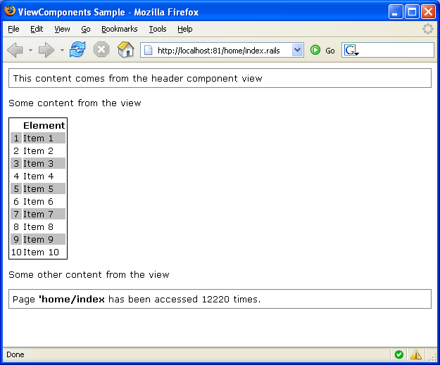

Reusing UI portions (ViewComponents)
It is very common to have a portion of UI content that is reused amongst pages. When the content is more than simple static content you can rely on the ViewComponent infrastructure.
A ViewComponent is a class that resembles the controller functionality. It might use views and send data to the view. It also support inner sections and parameters.
Creating a ViewComponent
A ViewComponent is a class that extends ViewComponent abstract class. Three methods can be optionally overriden to customize its behavior:
- Initialize: used to intialize the state of your view component, usually by examining supplied parameters
- Render: selects the view or uses another approach to render the component content
- SupportsSection: invoked by the view engine to check if the component supports the section supplied on the view
A very minimal ViewComponent could be the following:
using Castle.MonoRail.Framework; public class HeaderComponent : ViewComponent { }
The ViewComponent above will fallback to the default behavior as nothing was customized. The default behavior is to render the view associated with the component, which should lie on the folder components/headercomponent/default. For example, if you were using NVelocity view engine it would be components/headercomponent/default.vm.
Just like controllers, you can select different views. For example:
using Castle.MonoRail.Framework; public class HeaderComponent : ViewComponent { public override void Render() { RenderView("otherview"); } }
For the case above the selected view would be components/headercomponent/otherview.vm (in the case of NVelocity view engine).
Using a ViewComponent
A ViewComponent has no relation with controller, only with the views selected by the controllers.
When it comes to usage, ViewComponents can be used with a block (nested content) or without (inline). The name of the component (class name) is used to identify the ViewComponent you want to render. Usage varies depending on the View Engine implementation.
#component(HeaderComponent)
<?brail component HeaderComponent ?>
ViewComponents that use the nested content usually use a different syntax:
#blockcomponent(NewsComponent) <ul> #foreach($new in $news) <li>$news.Date $news.Title</li> #end </ul> #end
<?brail component NewsComponent: ?> <ul> <?brail for item in news: ?> <i>${item.Date} ${item.Title}</i> </ul> <?brail end ?>
Using parameters
The programmer can supply parameters to the ViewComponent. On the ViewComponent's code, parameters can be accessed using the property ComponentParams. For example:
using Castle.MonoRail.Framework; public class TableComponent : ViewComponent { private ICollection elements; private object border; private string style; private object cellpadding; private object cellspacing; public override void Initialize() { elements = (ICollection) ComponentParams["elements"]; border = ComponentParams["border"]; style = (String) ComponentParams["style"]; cellpadding = ComponentParams["cellpadding"]; cellspacing = ComponentParams["cellspacing"]; base.Initialize(); } ...
On the view side, parameters are supplied in different ways, depending on your view engine of choice:
#blockcomponent(TableComponent with "elements=$items" "border=0" "style=border: 1px solid black;" "cellpadding=0" "cellspacing=2") ... #end
<?brail component TableComponent, {"elements" : items, "border" : 0, "style" : "border: 1px solid black;", "cellpadding" : 0, "cellspacing" : 2 } : ... ... end ?>
Block and nested sections
The inner content block is the content that is enclosed by a ViewComponent used as a block. For example:
#blockcomponent(RepeatComponent) This is the inner content $counter #end
<?brail component RepeatComponent: ?> This is the inner content ${counter} <?brail end ?>
The ViewComponent has control over the nested content and can renders it how many times it wants to. The following component renders the inner content five times:
using Castle.MonoRail.Framework; public class RepeatComponent : ViewComponent { public override void Render() { for(int i=0; i < 5; i++) { PropertyBag["counter"] = i; Context.RenderBody(); } } }
Often this is not enough to create a reusable ViewComponent. For these cases you can have inner sections with your view component. The ViewComponent's code can have a more elaborated logic to render the section contents. For example:
#blockcomponent(TableComponent with "elements=$items") #colheaders <tr> <th> </th> <th>Element</th> </tr> #end #item <tr> <td>$index</td> <td>$item</td> </tr> #end #altitem <tr> <td align="center">$index</td> <td>$item</td> </tr> #end #end
Brail doesn't supports view components sections at the moment. Similar functionality can be had by using output methods.
In the example above there are three distinct inner sections: colheaders, item and altitem. The TableComponent renders a simple table and is defined in the following code:
using Castle.MonoRail.Framework; public class TableComponent : ViewComponent { private ICollection elements; private object border; private string style; private object cellpadding; private object cellspacing; public override void Initialize() { elements = (ICollection) ComponentParams["elements"]; border = ComponentParams["border"]; style = (String) ComponentParams["style"]; cellpadding = ComponentParams["cellpadding"]; cellspacing = ComponentParams["cellspacing"]; base.Initialize(); } public override void Render() { RenderText( String.Format("<table border=\"{0}\" style=\"{1}\" cellpadding=\"{2}\" cellspacing=\"{3}\">", border, style, cellpadding, cellspacing)); if (Context.HasSection("colheaders")) { Context.RenderSection("colheaders"); } if (elements != null) { int index = 0; foreach(object item in elements) { PropertyBag["index"] = ++index; PropertyBag["item"] = item; if (Context.HasSection("altitem") && index % 2 != 0) { Context.RenderSection("altitem"); } else { Context.RenderSection("item"); } } } RenderText("</table>"); } public override bool SupportsSection(string name) { return name == "colheaders" || name == "item" || name == "altitem"; } }
The following is a screenshot of three view components in use:
